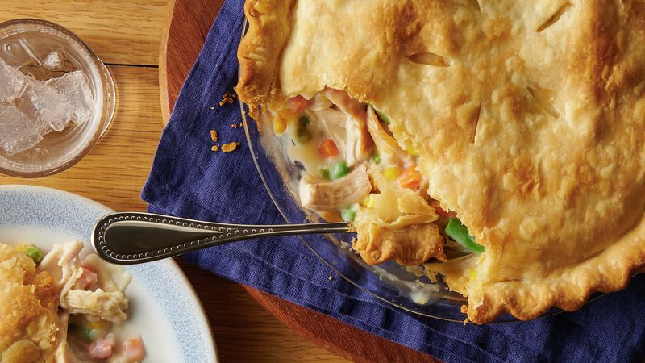

Chicken Pot Pie

Description
One of our most popular and top-rated meals of all time, this Classic Chicken Pot Pie has a flaky, buttery crust, a creamy sauce, and a hearty mix of chicken and vegetables your family will love. Plus, this homemade chicken pot pie is super easy to prep, making it a great recipe for beginner cooks and busy families alike.
Ingredients - yields 8 servings
- i recipe pastry for a 9 inche double crust pie
- 2 cups frozen mixed vegetables
- 2 boneless, skinless chicken breast halves, boiled
- 1 teaspoon dried thyme
- 1/2 (10.75 ounce) can condensed cream of celery soup
- 1 (10.75 ounce) can condensed cream of potato soup
Steps:
- Preheat oven to 400 degrees F (200 degrees C).
- Line a 9 inch pie dish with pastry.
- Blanch frozen mixed vegetables for 3 to 4 minutes. Drain.
- Dice chicken and place in a large bowl. Add vegetables, thyme, celery soup and potato soup. Stir together.
- Pour filling into pastry lined pie dish.
- Arrange top layer of pie crust, seal and flute the edges. Cut slits in the top of the crust to allow for steam to escape.
- Place pie on cookie sheet. Put aluminum foil around the pie crust edges.
- Bake at 400 degrees F (200 degrees C) for 30 minutes. Remove foil and continue to bake for an additional 30 minutes until golden brown.
- Remove from oven and let stand for 5 minutes and then serve.